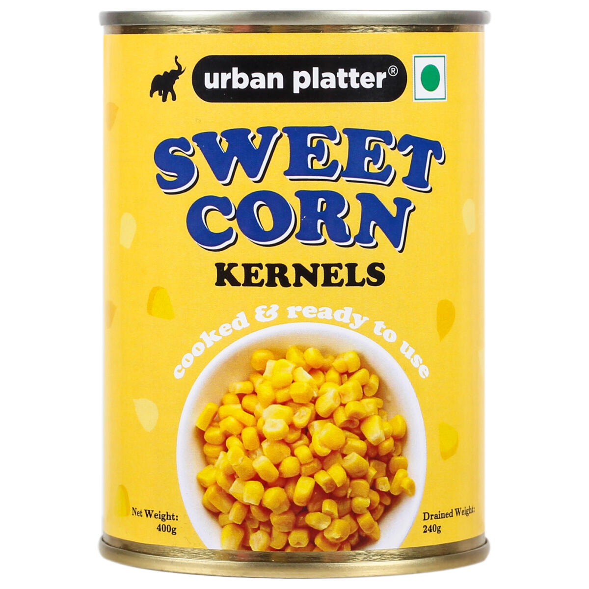

<mat-toolbar color="warn">
  <button mat-icon-button aria-label="Example icon-button with menu icon">
    <mat-icon class="icon"
      ></mat-icon>
  </button>
  <span>{{ title }}</span>
  <span class="spacer"></span>
  <div>
    <button
      mat-flat-button
      [routerLink]="''"
      [color]="this.route == 'home' ? 'accent' : 'warn'"
    >
      Home
    </button>
    <button
      mat-flat-button
      *ngIf="buttons == 'Logout'"
      [color]="this.route == 'product' ? 'accent' : 'warn'"
      [matMenuTriggerFor]="products"
    >
      Products
    </button>
    <mat-menu #products="matMenu">
      <button mat-menu-item [matMenuTriggerFor]="veges">Veges</button>
      <button mat-menu-item [matMenuTriggerFor]="electronics">
        Electronics
      </button>
      <button mat-menu-item [matMenuTriggerFor]="fruits">Fruits</button>
    </mat-menu>

    <mat-menu #fruits="matMenu">
      <button mat-menu-item [routerLink]="links[0]">Apples and Pears</button>
      <button mat-menu-item [routerLink]="links[0]">Citrus</button>
      <button mat-menu-item [routerLink]="links[0]">Stone Fruit</button>
      <button mat-menu-item [routerLink]="links[0]">Tropical and Exotic</button>
      <button mat-menu-item [routerLink]="links[0]">Berries</button>
      <button mat-menu-item [routerLink]="links[0]">Melons</button>
      <button mat-menu-item [routerLink]="links[0]">
        Tomatoes and Aavocados
      </button>
    </mat-menu>
    <mat-menu #electronics="matMenu">
      <button mat-menu-item [routerLink]="links[2]">
        Smart Phones
        
      </button>
      <button mat-menu-item [routerLink]="links[2]">Smart Watches</button>
      <button mat-menu-item [routerLink]="links[2]">Camera</button>
      <button mat-menu-item [matMenuTriggerFor]="households">
        Home Appliances
      </button>
    </mat-menu>

    <mat-menu #households="matMenu">
      <button mat-menu-item [routerLink]="links[2]">Vaccum Cleaners</button>
      <button mat-menu-item [routerLink]="links[2]">Grinders</button>
      <button mat-menu-item [routerLink]="links[2]">Mixers</button>
      <button mat-menu-item [routerLink]="links[2]">Choppers</button>
      <button mat-menu-item [routerLink]="links[2]">Sewing Machines</button>
      <button mat-menu-item [routerLink]="links[2]">Water Heaters</button>
      <button mat-menu-item [routerLink]="links[2]">Washers</button>
    </mat-menu>

    <mat-menu #veges="matMenu">
      <button mat-menu-item [routerLink]="'/products/veges'">
        Cruciferous
      </button>
      <button mat-menu-item [routerLink]="links[1]">Leafy Green</button>
      <button mat-menu-item [routerLink]="links[1]">Allium</button>
      <button mat-menu-item [routerLink]="links[1]">
        Edible Plant Stem
        
      </button>
      <button mat-menu-item [routerLink]="links[1]">Root</button>
      <button mat-menu-item [routerLink]="links[1]">Marrow</button>
    </mat-menu>
    <button
      mat-flat-button
      [routerLink]="'/shared/about-us'"
      [color]="this.route == 'about' ? 'accent' : 'warn'"
    >
      About Us
    </button>
    <button
      mat-flat-button
      [routerLink]="'/shared/contact-us'"
      [color]="this.route == 'contact' ? 'accent' : 'warn'"
    >
      Contact Us
    </button>
  </div>
  <span class="spacer"></span>
  <button
    *ngIf="buttons"
    mat-flat-button
    color="warn"
    class="example-icon favorite-icon"
    aria-label="Example icon-button with heart icon"
    (click)="LogIn_Logout()"
  >
    <mat-icon>{{ buttons.toLowerCase() }}</mat-icon>
    {{ buttons }}
  </button>
  <!-- <button
    mat-icon-button
    class="example-icon"
    aria-label="Example icon-button with share icon"
  >
    <mat-icon>share</mat-icon>
  </button> -->
</mat-toolbar>
